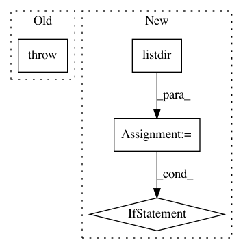

a58eb2cc4ab506f1611c06a308cb6a2ae710707b,allennlp/training/trainer.py,Trainer,_restore_checkpoint,#Trainer#,312
Before Change
in the saved training state.
if not self._serialization_dir:
raise ConfigurationError("serialization_dir not specified - cannot "
"restore a model without a directory path.")
serialization_files = os.listdir(self._serialization_dir)
model_checkpoints = [x for x in serialization_files if "model_state_epoch" in x]
epoch_to_load = max([int(x.split("model_state_epoch_")[-1].strip(".th")) for x in model_checkpoints])
After Change
The epoch at which to resume training, which should be one after the epoch
in the saved training state.
have_checkpoint = (self._serialization_dir is not None and
any("model_state_epoch_" in x for x in os.listdir(self._serialization_dir)))
if not have_checkpoint:
// No checkpoint to restore, start at 0
return 0
serialization_files = os.listdir(self._serialization_dir)
model_checkpoints = [x for x in serialization_files if "model_state_epoch" in x]
epoch_to_load = max([int(x.split("model_state_epoch_")[-1].strip(".th")) for x in model_checkpoints])
In pattern: SUPERPATTERN
Frequency: 3
Non-data size: 4
Instances
Project Name: allenai/allennlp
Commit Name: a58eb2cc4ab506f1611c06a308cb6a2ae710707b
Time: 2017-09-26
Author: joelgrus@gmail.com
File Name: allennlp/training/trainer.py
Class Name: Trainer
Method Name: _restore_checkpoint
Project Name: deepfakes/faceswap
Commit Name: 9461c597736ad6ac419a392edeca9221aa53e238
Time: 2020-04-09
Author: 36920800+torzdf@users.noreply.github.com
File Name: scripts/train.py
Class Name: Train
Method Name: _set_timelapse
Project Name: ANTsX/ANTsPy
Commit Name: 8f22750dbdac281232241c20736018c47a7a8e26
Time: 2017-09-07
Author: ncullen.th@dartmouth.edu
File Name: ants/utils/get_ants_data.py
Class Name:
Method Name: get_ants_data